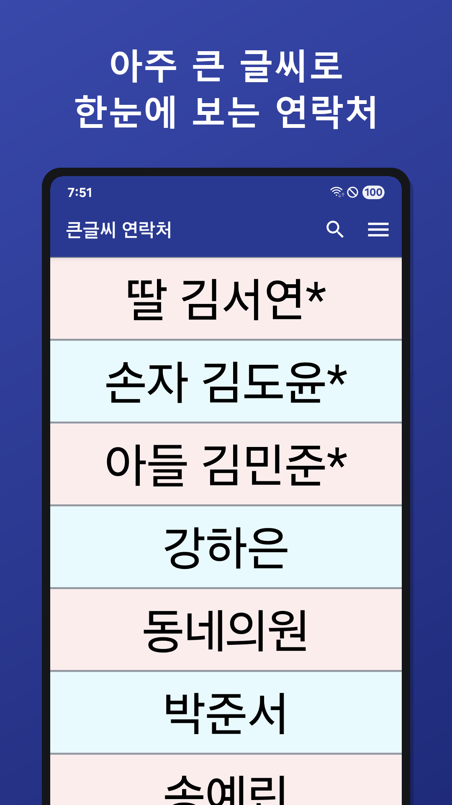
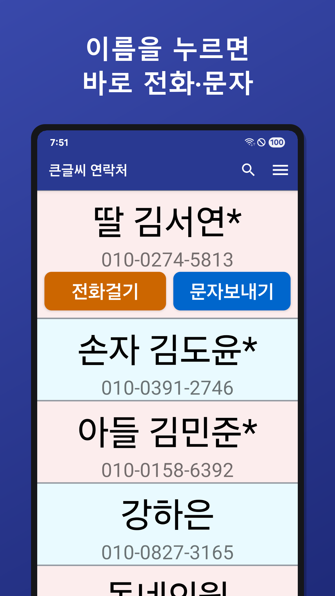
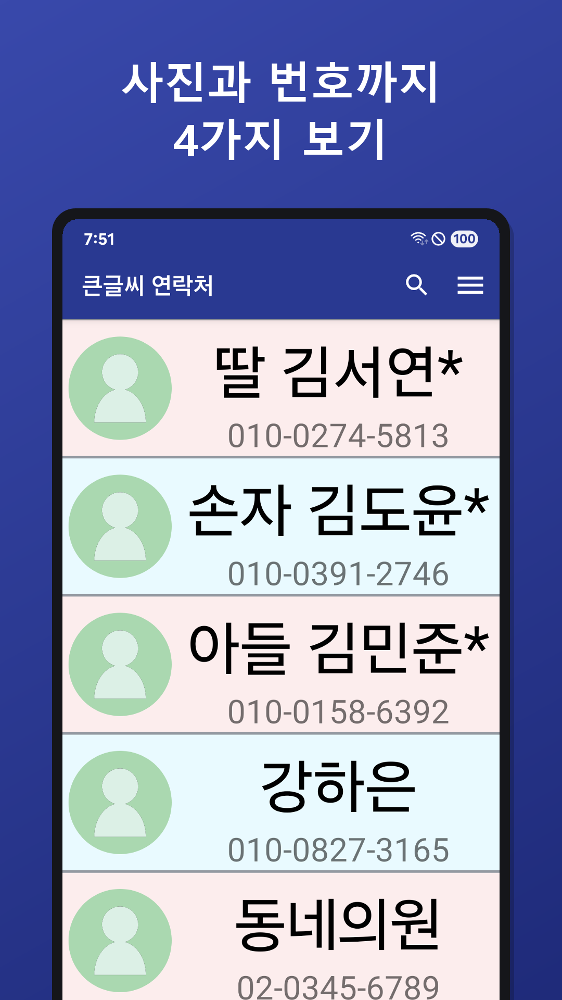
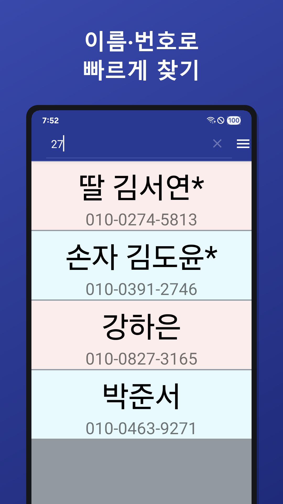
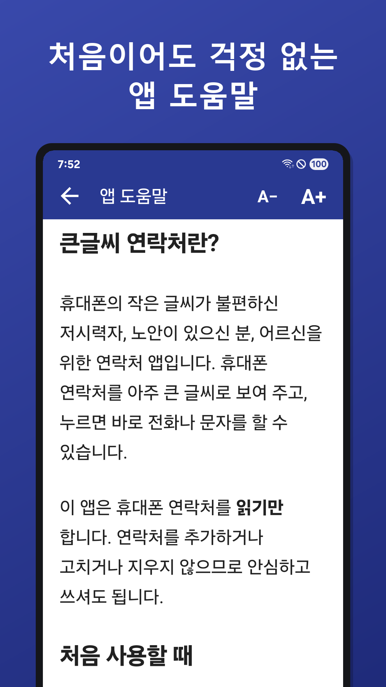

스마트폰의 작은 글씨 때문에 전화 걸기가 불편하셨나요?
큰글씨 연락처는 저시력, 노안이 있으신 분과 어르신을 위해 만든 연락처 앱입니다. 휴대폰 연락처를 아주 큰 글씨로 보여 주고, 이름을 누르면 바로 전화나 문자를 할 수 있습니다.
아주 큰 글씨
- 연락처 이름을 화면 가득 큰 글씨로 보여 줍니다.
- 글자 크기는 8단계입니다. 메뉴(☰)의 '글자 크게 / 글자 작게'로 한 단계씩 바꿀 수 있습니다.
- 휴대폰 설정의 글꼴 크기와 상관없이, 이 앱에서 고른 크기로 보여 줍니다.
- 정한 글자 크기와 보기는 앱을 다시 켜도 그대로 유지됩니다.
누르면 바로 전화·문자
- 이름을 누르면 큰 '전화걸기'와 '문자보내기' 버튼이 나타납니다.
- 전화걸기를 누르면 번호가 입력된 전화 화면이 열립니다. 통화 버튼을 한 번 더 눌러야 걸리므로, 잘못 눌러 전화가 걸리는 일이 적습니다.
4가지 보기
- 이름만 / 이름 + 번호 / 사진 + 이름 / 사진 + 이름 + 번호
- 연락처에 저장된 사진을 동그랗게 보여 줍니다.
쉽게 찾기
- 즐겨찾기한 가족·지인이 맨 위에 나오고, 나머지는 이름 순서입니다.
- 돋보기를 눌러 이름이나 번호 일부로 빠르게 찾을 수 있습니다.
처음이어도 쉽게
- 처음 실행할 때 연락처 접근을 허용하면 바로 연락처를 가져옵니다.
- 메뉴의 '앱 도움말'에서 사용법을 큰 글씨로 자세히 볼 수 있습니다. 도움말 글자도 A− / A+로 키울 수 있습니다.
10개 언어
- 한국어, 영어, 중국어(간체), 일본어, 스페인어, 독일어, 프랑스어, 러시아어, 힌디어, 아랍어를 지원합니다.
- 휴대폰 언어를 따르고, 메뉴의 '언어 (Language)'에서 이 앱만 다른 언어로 바꿀 수도 있습니다.
안심하고 쓰세요
- 휴대폰 연락처를 읽기만 하고, 추가·수정·삭제하지 않습니다.
- 인터넷 권한이 없어 연락처를 어디로도 보내지 않습니다.
- 광고가 없습니다.
- 필요한 권한은 '연락처' 하나뿐입니다.
알아 두세요
- 휴대폰 연락처에 새 번호를 저장하거나 고친 뒤에는 메뉴의 '핸드폰 연락처 가져오기'를 눌러 주세요.
부모님 휴대폰에 설치해 드리면, 큰 글씨로 편하게 가족에게 전화하실 수 있습니다.
Google Play에서 받기 (무료)